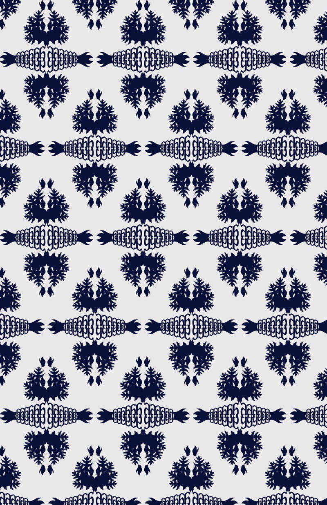
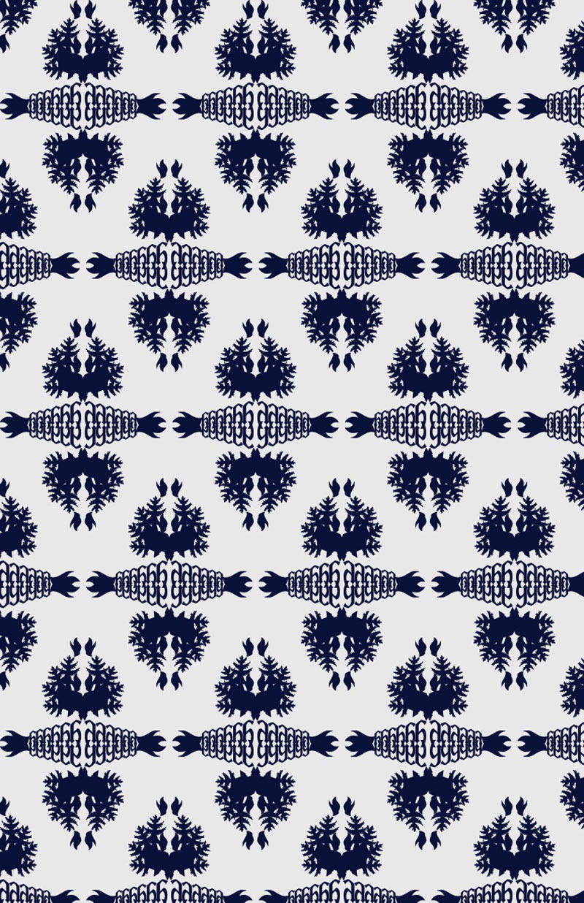

Patterns
Digital
Fall 2013
This project was created largely by creating a few vectored shapes, setting up a series of transformations, and then carrying out those transformations on Illustrator and seeing the results. The process could then be changed to adjust the pattern.
 
